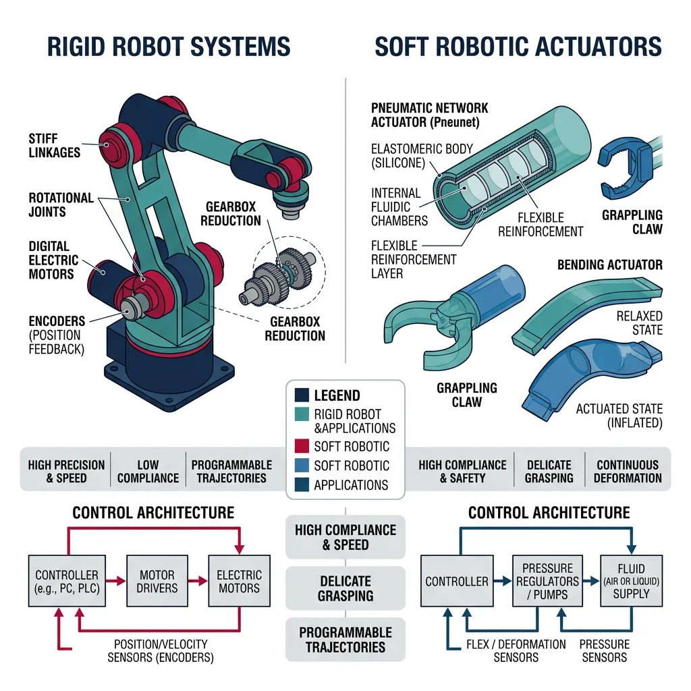
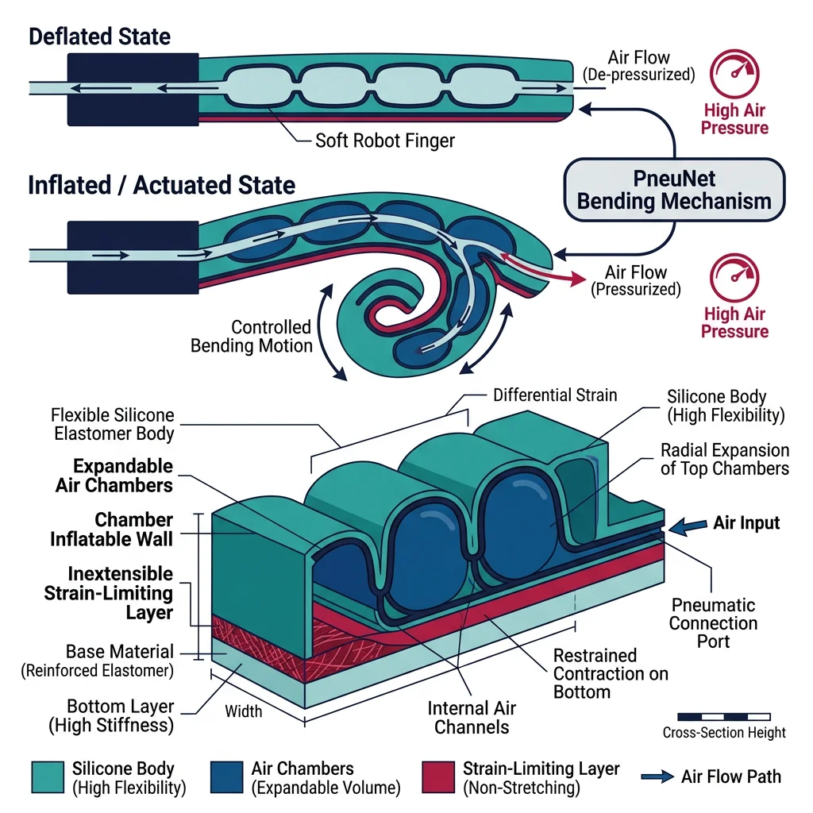
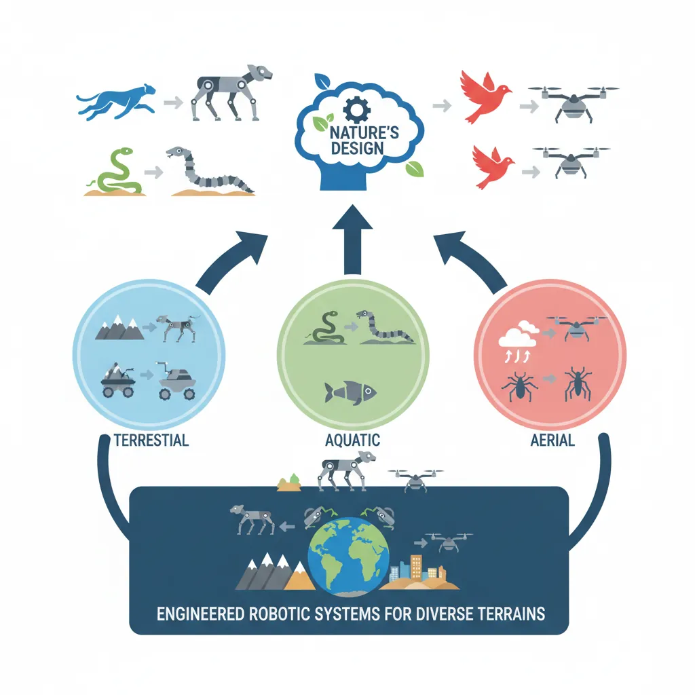
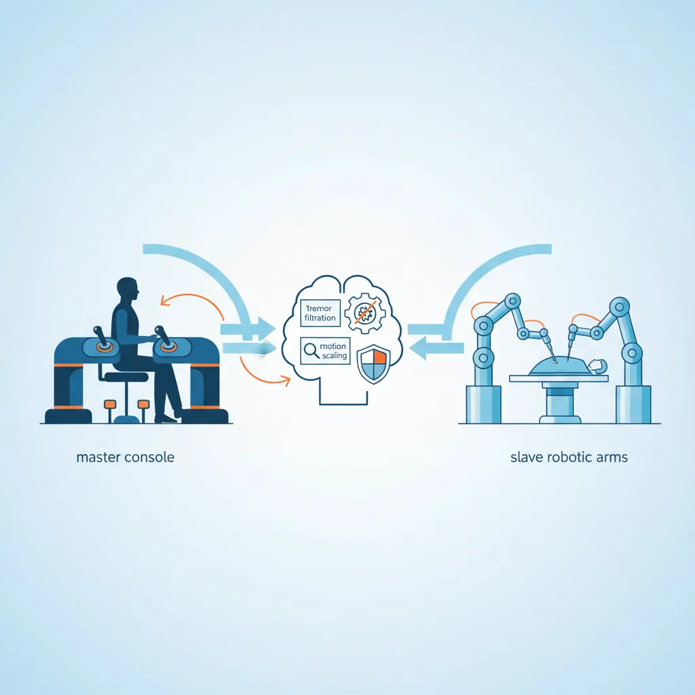
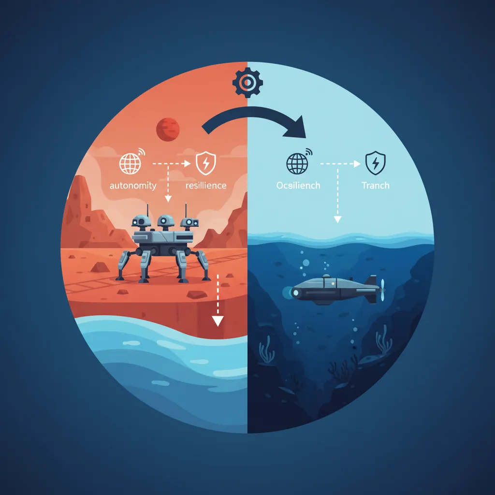

Soft Robotics
Robotics & Automation Mastery
Introduction to Robotics
History, types, DOF, architectures, mechatronics, ethicsSensors & Perception Systems
Encoders, IMUs, LiDAR, cameras, sensor fusion, Kalman filters, SLAMActuators & Motion Control
DC/servo/stepper motors, hydraulics, drivers, gear systemsKinematics (Forward & Inverse)
DH parameters, transformations, Jacobians, workspace analysisDynamics & Robot Modeling
Newton-Euler, Lagrangian, inertia, friction, contact modelingControl Systems & PID
PID tuning, state-space, LQR, MPC, adaptive & robust controlEmbedded Systems & Microcontrollers
Arduino, STM32, RTOS, PWM, serial protocols, FPGARobot Operating Systems (ROS)
ROS2, nodes, topics, Gazebo, URDF, navigation stacksComputer Vision for Robotics
Calibration, stereo vision, object recognition, visual SLAMAI Integration & Autonomous Systems
ML, reinforcement learning, path planning, swarm roboticsHuman-Robot Interaction (HRI)
Cobots, gesture/voice control, safety standards, social roboticsIndustrial Robotics & Automation
PLC, SCADA, Industry 4.0, smart factories, digital twinsMobile Robotics
Wheeled/legged robots, autonomous vehicles, drones, marine roboticsSafety, Reliability & Compliance
Functional safety, redundancy, ISO standards, cybersecurityAdvanced & Emerging Robotics
Soft robotics, bio-inspired, surgical, space, nano-roboticsSystems Integration & Deployment
HW/SW co-design, testing, field deployment, lifecycleRobotics Business & Strategy
Startups, product-market fit, manufacturing, go-to-marketComplete Robotics System Project
Autonomous rover, pick-and-place arm, delivery robot, swarm simThink of traditional robots as skeletons — rigid, strong, and precise. Now imagine a robot built more like an octopus tentacle: it can squeeze through cracks, gently wrap around a tomato, and conform to irregular surfaces. That is the promise of soft robotics, a field that replaces metal links with elastomers, silicones, and fabric-based structures.

Compliant Materials
Soft robots are built from materials with elastic moduli closer to biological tissue (kPa–MPa range) rather than metals (GPa range). Key material families include:
| Material Class | Examples | Young's Modulus | Typical Use |
|---|---|---|---|
| Silicone Elastomers | Ecoflex, Dragon Skin | 10–100 kPa | Pneumatic actuators, grippers |
| Shape Memory Alloys | Nitinol (NiTi) | 28–83 GPa (variable) | Bending actuators, stents |
| Hydrogels | PAAm, PNIPAM | 1–100 kPa | Drug delivery, micro-robots |
| Electroactive Polymers | PVDF, acrylic DE | 0.1–10 MPa | Artificial muscles |
| Fabric/Textile | Nylon, Kevlar composites | 1–10 GPa | Wearable exosuits |
Continuum Kinematics
Unlike rigid robots with discrete joints, soft robots deform continuously. The Piecewise Constant Curvature (PCC) model approximates a soft body as a series of circular arcs, each described by curvature κ, arc length s, and bending plane angle φ:
import numpy as np
import matplotlib.pyplot as plt
def pcc_arc(kappa, s, phi, n_points=50):
"""Compute 3D arc using Piecewise Constant Curvature model.
kappa: curvature (1/m), s: arc length (m), phi: bending plane angle (rad)
"""
if abs(kappa) < 1e-9:
# Straight segment
t = np.linspace(0, s, n_points)
return np.zeros(n_points), np.zeros(n_points), t
theta = np.linspace(0, kappa * s, n_points)
r = 1.0 / kappa
x = r * (1 - np.cos(theta)) * np.cos(phi)
y = r * (1 - np.cos(theta)) * np.sin(phi)
z = r * np.sin(theta)
return x, y, z
# Two-segment soft robot arm
fig = plt.figure(figsize=(8, 6))
ax = fig.add_subplot(111, projection='3d')
# Segment 1: gentle bend
x1, y1, z1 = pcc_arc(kappa=3.0, s=0.15, phi=0)
ax.plot(x1, y1, z1, 'b-', linewidth=4, label='Segment 1 (κ=3)')
# Segment 2: tighter bend from endpoint of seg 1
x2, y2, z2 = pcc_arc(kappa=6.0, s=0.10, phi=np.pi/4)
ax.plot(x2 + x1[-1], y2 + y1[-1], z2 + z1[-1], 'r-', linewidth=4, label='Segment 2 (κ=6)')
ax.set_xlabel('X (m)')
ax.set_ylabel('Y (m)')
ax.set_zlabel('Z (m)')
ax.set_title('Piecewise Constant Curvature — 2-Segment Soft Robot')
ax.legend()
plt.tight_layout()
plt.show()
Pneumatic Soft Actuators
The most popular actuation method in soft robotics is pneumatic actuation — inflating or deflating air chambers embedded in an elastomeric body. The geometry of internal voids determines the motion: asymmetric chambers produce bending, concentric chambers produce elongation, and helical chambers produce twisting.

PneuNet (Pneumatic Network) Actuators
A PneuNet actuator consists of a series of connected air chambers cast in silicone with an inextensible strain-limiting layer on one side. When pressurized, the extensible top expands while the bottom constrains, causing the actuator to curl — much like a bimetallic strip heated on one side.
import numpy as np
import matplotlib.pyplot as plt
def pneunet_bending(pressure_kpa, n_chambers=5, chamber_height=0.01,
wall_thickness=0.002, E_silicone=100e3):
"""Simplified PneuNet bending angle prediction.
pressure_kpa: input pressure in kPa
Returns: total bending angle in degrees
"""
pressure_pa = pressure_kpa * 1000
# Each chamber contributes an angular deflection
# theta_i ≈ (P * h) / (E * t) for thin-walled approximation
theta_per_chamber = (pressure_pa * chamber_height) / (E_silicone * wall_thickness)
total_angle_rad = n_chambers * theta_per_chamber
return np.degrees(total_angle_rad)
pressures = np.linspace(0, 80, 100)
angles = [pneunet_bending(p) for p in pressures]
plt.figure(figsize=(8, 5))
plt.plot(pressures, angles, 'b-', linewidth=2)
plt.xlabel('Input Pressure (kPa)')
plt.ylabel('Bending Angle (degrees)')
plt.title('PneuNet Actuator: Pressure vs. Bending Response')
plt.grid(True, alpha=0.3)
plt.axhline(y=180, color='r', linestyle='--', alpha=0.5, label='180° max curl')
plt.legend()
plt.tight_layout()
plt.show()
print(f"Angle at 40 kPa: {pneunet_bending(40):.1f}°")
print(f"Angle at 70 kPa: {pneunet_bending(70):.1f}°")
Case Study: Harvard Soft Robotics Toolkit
Harvard's Biodesign Lab released the Soft Robotics Toolkit — an open-source platform providing design files, fabrication recipes, and control software for PneuNet actuators. Researchers worldwide have used it to build grippers that can pick up objects from delicate eggs to heavy tools simply by varying pressure. The toolkit lowered the barrier from requiring a materials science PhD to anyone with a 3D printer and a silicone casting kit.
Key insight: By making soft robotics accessible, the toolkit accelerated the field — over 500 research groups adopted the platform within three years of its release.
Soft Grippers & Manipulation
Soft grippers exploit compliance to conform around objects of unknown shape, distributing contact forces naturally. This makes them ideal for picking fruit, handling electronics, and food processing — tasks where rigid grippers require expensive force sensors and complex control.
Gripper Architectures
| Type | Mechanism | Payload | Best For |
|---|---|---|---|
| Fin Ray | Passive compliance — fingers bend inward on contact | 0.1–5 kg | Delicate objects, irregular shapes |
| Granular Jamming | Bag of granules vacuum-sealed around object | 1–20 kg | Universal grasping, unknown objects |
| PneuNet Fingers | Pneumatic chambers curl fingers around object | 0.05–2 kg | Lab automation, food handling |
| Gecko-Inspired | Van der Waals adhesion via micro-structured surfaces | 0.01–1 kg | Flat/smooth surfaces, space debris |
| Electroadhesion | Electrostatic attraction via charged electrodes | 0.01–5 kg | Textiles, paper, thin materials |
import numpy as np
import matplotlib.pyplot as plt
def granular_jamming_force(vacuum_kpa, bag_area_m2=0.01, friction_coeff=0.6):
"""Estimate holding force of a granular jamming gripper.
F_hold ≈ μ × P × A (Coulomb friction model)
vacuum_kpa: gauge vacuum pressure (kPa)
"""
pressure_pa = vacuum_kpa * 1000
return friction_coeff * pressure_pa * bag_area_m2
# Compare gripper types
vacuums = np.linspace(0, 80, 100)
forces = [granular_jamming_force(v) for v in vacuums]
plt.figure(figsize=(8, 5))
plt.plot(vacuums, forces, 'g-', linewidth=2, label='Granular Jamming')
plt.axhline(y=9.81 * 1, color='r', linestyle='--', alpha=0.6, label='1 kg object weight')
plt.axhline(y=9.81 * 5, color='orange', linestyle='--', alpha=0.6, label='5 kg object weight')
plt.xlabel('Vacuum Pressure (kPa)')
plt.ylabel('Holding Force (N)')
plt.title('Granular Jamming Gripper: Holding Force vs. Vacuum')
plt.legend()
plt.grid(True, alpha=0.3)
plt.tight_layout()
plt.show()
print(f"At 60 kPa vacuum: {granular_jamming_force(60):.1f} N holding force")
Bio-Inspired Robotics
Nature has had billions of years of R&D. Bio-inspired robotics (biomimetics) studies biological organisms and adapts their strategies — locomotion gaits, sensing modalities, material properties, and collective behaviors — into engineered systems. The goal isn't to copy nature exactly, but to extract design principles that evolution has optimized.

Locomotion Strategies from Nature
| Organism | Locomotion | Robot Example | Key Advantage |
|---|---|---|---|
| Cheetah | Bounding gait, flexible spine | MIT Cheetah 3 | High-speed terrain traversal |
| Gecko | Wall climbing via setae adhesion | Stickybot (Stanford) | Vertical surface mobility |
| Snake | Lateral undulation, sidewinding | CMU Snake Robot | Confined space navigation |
| Cockroach | Rapid alternating tripod gait | DASH, RHex | Obstacle traversal at small scale |
| Fish | Carangiform / thunniform swimming | MIT RoboTuna, SoFi | Efficient underwater propulsion |
| Bird | Flapping flight, soaring | Festo SmartBird | Agile aerial maneuvering |
Case Study: Boston Dynamics Spot — Quadruped Biomimetics
Spot draws from studies of dog and cheetah locomotion. Its 12-DOF leg design enables walking, trotting, and bounding gaits. Unlike rigid industrial robots limited to flat floors, Spot navigates stairs, rubble, and slopes using a combination of model-predictive control (MPC) and learned recovery behaviors trained in simulation.
Bio-inspired features: Compliant leg joints absorb impact energy (like tendons), a virtual model control framework mimics how animals stabilize their center of mass, and proprioceptive reflexes enable "blind" locomotion over unseen obstacles.
Impact: Deployed in construction site inspection, nuclear facility monitoring, and offshore oil rig surveys — environments too dangerous for humans and too unstructured for wheeled robots.
Artificial Muscles
Biological muscles are remarkable actuators — they are soft, lightweight, self-healing, and can generate forces up to 0.35 MPa specific stress. Engineering artificial muscles aims to match these properties for robots that move more naturally than servo-driven linkages.
Artificial Muscle Technologies
| Technology | Mechanism | Strain (%) | Specific Stress (MPa) | Response Time |
|---|---|---|---|---|
| Dielectric Elastomer (DEA) | Electrostatic compression of elastomer film | 10–100 | 0.1–3 | ms |
| Shape Memory Alloy (SMA) | Phase transformation (martensite↔austenite) | 4–8 | 200–700 | 0.1–10 s |
| Pneumatic Artificial Muscle (PAM) | Braided mesh contracts when pressurized | 20–40 | 0.1–0.5 | 10–100 ms |
| Twisted Coiled Polymer (TCP) | Nylon fiber untwists when heated | 20–50 | 5–30 | 0.5–5 s |
| Hydraulic Amplification (HASEL) | Electrostatic zipping displaces fluid | 10–50 | 0.1–1 | ms |
import numpy as np
import matplotlib.pyplot as plt
def mckibben_force(pressure_kpa, braid_angle_deg=20, radius=0.01):
"""McKibben pneumatic artificial muscle force model.
F = (P × π × r²) × (3 × cos²(θ) - 1) / (4π × n²)
Simplified: F ≈ P × A × (3cos²θ - 1)
"""
P = pressure_kpa * 1000 # Pa
theta = np.radians(braid_angle_deg)
A = np.pi * radius**2
force = P * A * (3 * np.cos(theta)**2 - 1)
return max(force, 0)
pressures = np.linspace(0, 600, 100)
angles = [15, 20, 25, 30]
plt.figure(figsize=(9, 5))
for angle in angles:
forces = [mckibben_force(p, angle) for p in pressures]
plt.plot(pressures, forces, linewidth=2, label=f'Braid angle {angle}°')
plt.xlabel('Pressure (kPa)')
plt.ylabel('Contraction Force (N)')
plt.title('McKibben Muscle: Force vs. Pressure at Different Braid Angles')
plt.legend()
plt.grid(True, alpha=0.3)
plt.tight_layout()
plt.show()
print(f"Force at 400 kPa, 20° braid: {mckibben_force(400, 20):.2f} N")
Swarm & Collective Behavior
A single ant cannot carry much, but a colony of ants builds bridges, farms fungus, and wages wars. Swarm robotics takes this principle — simple individuals, complex collective behavior — and applies it to groups of robots that communicate locally, share no central controller, and achieve emergent coordination.
import numpy as np
import matplotlib.pyplot as plt
def simulate_boids(n_boids=40, steps=200, separation_r=0.1,
alignment_r=0.3, cohesion_r=0.5):
"""Reynolds Boids flocking simulation.
3 rules: separation, alignment, cohesion.
"""
# Initialize positions and velocities
pos = np.random.rand(n_boids, 2)
vel = (np.random.rand(n_boids, 2) - 0.5) * 0.02
history = [pos.copy()]
for step in range(steps):
new_vel = vel.copy()
for i in range(n_boids):
diffs = pos - pos[i]
dists = np.linalg.norm(diffs, axis=1)
dists[i] = np.inf # exclude self
# Rule 1: Separation — steer away from close neighbors
sep_mask = dists < separation_r
if sep_mask.any():
new_vel[i] -= diffs[sep_mask].mean(axis=0) * 0.05
# Rule 2: Alignment — match velocity of nearby boids
align_mask = dists < alignment_r
if align_mask.any():
new_vel[i] += (vel[align_mask].mean(axis=0) - vel[i]) * 0.05
# Rule 3: Cohesion — steer towards center of nearby group
coh_mask = dists < cohesion_r
if coh_mask.any():
center = pos[coh_mask].mean(axis=0)
new_vel[i] += (center - pos[i]) * 0.01
# Limit speed
speeds = np.linalg.norm(new_vel, axis=1, keepdims=True)
max_speed = 0.02
new_vel = np.where(speeds > max_speed, new_vel / speeds * max_speed, new_vel)
vel = new_vel
pos = pos + vel
pos = pos % 1.0 # wrap around
history.append(pos.copy())
return history
history = simulate_boids(n_boids=40, steps=150)
fig, axes = plt.subplots(1, 3, figsize=(14, 4))
for idx, (step, title) in enumerate([(0, 'Initial (Random)'), (50, 'Forming Flocks'), (149, 'Stable Flocking')]):
ax = axes[idx]
ax.scatter(history[step][:, 0], history[step][:, 1], s=20, c='teal', alpha=0.8)
ax.set_xlim(0, 1)
ax.set_ylim(0, 1)
ax.set_title(title)
ax.set_aspect('equal')
ax.grid(True, alpha=0.2)
plt.suptitle('Reynolds Boids: Emergent Flocking from 3 Simple Rules', fontsize=13)
plt.tight_layout()
plt.show()
print("Swarm behaviors: separation + alignment + cohesion = emergent flocking")
Case Study: Kilobot — 1,024 Robot Swarm
Harvard's Kilobot project demonstrated self-organizing behavior with 1,024 simple robots, each just 3 cm in diameter. Using only vibration motors for movement and infrared for local communication (range ~10 cm), the swarm could form predetermined shapes — stars, letters, wrenches — through a gradient-based algorithm inspired by morphogenesis in biology.
Key result: No robot knew its global position. Each robot only knew its distance to a few neighbors and followed local rules: "Am I at the edge of the shape? Should I move or stay?" Yet the collective reliably formed complex 2D patterns in about 12 hours. This proved that large-scale coordination doesn't require complex individuals.
Medical & Surgical Robotics
Medical robotics is transforming healthcare — from surgeries performed with sub-millimeter precision through tiny incisions, to rehabilitation exoskeletons that help stroke patients walk again, to microscopic robots that could one day deliver drugs directly to cancer cells. This field demands the highest standards of safety, precision, and regulatory compliance.

Surgical Robot Architectures
| System | Manufacturer | Type | Specialties | Installations |
|---|---|---|---|---|
| da Vinci Xi | Intuitive Surgical | Teleoperated | Urology, gynecology, general | ~7,500+ |
| ROSA ONE | Zimmer Biomet | Semi-autonomous | Neurosurgery, spine | ~800+ |
| Mako SmartRobotics | Stryker | Haptic-guided | Orthopedic (joint replacement) | ~2,000+ |
| Ion Bronchoscopy | Intuitive Surgical | Shape-sensing catheter | Lung biopsy | ~400+ |
| Hugo RAS | Medtronic | Modular teleoperated | General, urological | ~200+ (growing) |
Case Study: da Vinci Surgical System — The Market Leader
The da Vinci Xi represents the most commercially successful surgical robot. Its master-slave teleoperation architecture uses 4 robotic arms with EndoWrist instruments that provide 7 degrees of freedom — exceeding the human wrist's range of motion. The surgeon sits at a console viewing a magnified 3D stereoscopic image while controlling instruments that scale and filter hand movements.
Technical specifications: Instrument tip accuracy ±1 mm, motion scaling from 2:1 to 5:1, tremor filtration >6 Hz, 10× magnification. Over 12 million procedures performed worldwide.
Economic impact: While a da Vinci system costs ~$2 million with ~$3,500 per procedure in disposable instrument costs, hospitals report 20-50% shorter patient stay and reduced complication rates for complex procedures, offsetting costs.
import numpy as np
import matplotlib.pyplot as plt
def tremor_filter(signal, cutoff_hz=6, dt=0.001):
"""Simple low-pass filter to simulate surgical tremor elimination.
Removes frequencies above cutoff_hz (hand tremor is typically 8-12 Hz).
Uses exponential moving average as simple approximation.
"""
alpha = dt * cutoff_hz * 2 * np.pi / (1 + dt * cutoff_hz * 2 * np.pi)
filtered = np.zeros_like(signal)
filtered[0] = signal[0]
for i in range(1, len(signal)):
filtered[i] = alpha * signal[i] + (1 - alpha) * filtered[i-1]
return filtered
# Simulate surgeon hand movement + tremor
t = np.linspace(0, 2, 2000)
dt = t[1] - t[0]
intended_motion = 0.01 * np.sin(2 * np.pi * 0.5 * t) # Slow intended movement (0.5 Hz)
tremor = 0.0001 * np.sin(2 * np.pi * 10 * t + 0.3) # 10 Hz hand tremor (100 μm)
hand_signal = intended_motion + tremor
# Apply motion scaling (5:1) and tremor filter
scaled_signal = hand_signal / 5.0 # 5:1 scaling
filtered_signal = tremor_filter(scaled_signal, cutoff_hz=6, dt=dt)
fig, axes = plt.subplots(3, 1, figsize=(10, 7), sharex=True)
axes[0].plot(t, hand_signal * 1000, 'r-', linewidth=1)
axes[0].set_ylabel('mm')
axes[0].set_title('Surgeon Hand Motion (with 10 Hz tremor)')
axes[1].plot(t, scaled_signal * 1000, 'orange', linewidth=1)
axes[1].set_ylabel('mm')
axes[1].set_title('After 5:1 Motion Scaling')
axes[2].plot(t, filtered_signal * 1000, 'g-', linewidth=1.5)
axes[2].set_ylabel('mm')
axes[2].set_title('After Tremor Filtration (6 Hz cutoff)')
axes[2].set_xlabel('Time (s)')
for ax in axes:
ax.grid(True, alpha=0.3)
plt.suptitle('Surgical Robot: Motion Scaling + Tremor Filtration Pipeline', fontsize=13)
plt.tight_layout()
plt.show()
print(f"Tremor amplitude: {np.std(tremor)*1e6:.0f} μm → After filtering: {np.std(filtered_signal - tremor_filter(intended_motion/5, 6, dt))*1e6:.1f} μm")
Rehabilitation Robotics
After stroke, spinal cord injury, or limb amputation, rehabilitation robots help patients regain motor function through repetitive, precisely controlled exercises. Unlike a human therapist limited by fatigue and inconsistency, a robot can deliver thousands of identical training repetitions per session while measuring progress with sensor-level precision.
Rehabilitation Robot Categories
| Category | Example | Application | Mechanism |
|---|---|---|---|
| Upper-limb Exoskeleton | Armeo Spring (Hocoma) | Stroke arm recovery | Gravity compensation + guided movement |
| Lower-limb Exoskeleton | ReWalk, Ekso GT | Spinal cord injury walking | Powered hip/knee joints + crutches |
| Gait Trainer | Lokomat (Hocoma) | Treadmill-based gait retraining | Body-weight support + leg guidance |
| End-Effector | MIT-Manus / InMotion ARM | Planar reaching exercises | Patient holds handle, robot guides/resists |
| Prosthetic Hand | LUKE Arm, bebionic | Amputee dexterity | Myoelectric signals drive motorized fingers |
Micro & Nano Robots for Medicine
Imagine swallowing a robot the size of a grain of sand that navigates your bloodstream, finds a tumor, and delivers chemotherapy directly to cancer cells — sparing healthy tissue from toxic side effects. This is the vision of micro/nano robotics, a field operating at scales from 1 μm to 1 mm.
Propulsion Mechanisms at Micro-Scale
At microscopic scales, inertia is negligible and viscous forces dominate (low Reynolds number Re < 1). Swimming strategies that work for fish fail completely. Micro-robots use alternative propulsion:
| Propulsion | Mechanism | Control | Speed |
|---|---|---|---|
| Magnetic Helical | Rotating helical body in external magnetic field | Rotating magnets | 1–50 body lengths/s |
| Catalytic Janus | Asymmetric H₂O₂ decomposition creates bubble thrust | Chemical gradient | 5–30 μm/s |
| Acoustic | Ultrasound-driven bubble oscillation | Frequency tuning | 10–100 μm/s |
| Biohybrid | Sperm cells or bacteria attached to synthetic body | Magnetic + chemical | 20–100 μm/s |
| Light-Driven | Photocatalytic reaction on one face | Laser steering | 1–20 μm/s |
import numpy as np
import matplotlib.pyplot as plt
def helical_microbot_velocity(freq_hz, helix_radius_um=5, pitch_um=20,
viscosity=0.001, body_length_um=50):
"""Estimate velocity of a magnetically actuated helical micro-swimmer.
Uses resistive force theory (Cox, 1970) simplified model.
v ≈ (2π × f × p × ξ_perp) / (ξ_para + ξ_perp)
where p = pitch, ξ = drag coefficients
"""
# Convert to SI
p = pitch_um * 1e-6
r_h = helix_radius_um * 1e-6
L = body_length_um * 1e-6
# Drag coefficients (slender body theory)
ln_term = np.log(2 * L / (2 * r_h))
xi_para = 2 * np.pi * viscosity / (ln_term - 0.5)
xi_perp = 4 * np.pi * viscosity / (ln_term + 0.5)
# Swimming velocity
omega = 2 * np.pi * freq_hz
v = (omega * p * (xi_perp - xi_para)) / (xi_para + xi_perp)
return abs(v) * 1e6 # return in μm/s
frequencies = np.linspace(1, 100, 100)
pitches = [10, 20, 40]
plt.figure(figsize=(9, 5))
for p in pitches:
velocities = [helical_microbot_velocity(f, pitch_um=p) for f in frequencies]
plt.plot(frequencies, velocities, linewidth=2, label=f'Pitch = {p} μm')
plt.xlabel('Rotation Frequency (Hz)')
plt.ylabel('Swimming Speed (μm/s)')
plt.title('Helical Micro-Robot: Speed vs. Magnetic Field Rotation Frequency')
plt.legend()
plt.grid(True, alpha=0.3)
plt.tight_layout()
plt.show()
print(f"At 50 Hz, 20 μm pitch: {helical_microbot_velocity(50, pitch_um=20):.1f} μm/s")
Case Study: ETH Zurich Magneto-Bacteria Biohybrids
Researchers at ETH Zurich developed biohybrid micro-robots by attaching magnetotactic bacteria (Magnetospirillum) to drug-loaded nanoliposomes. The bacteria naturally contain chains of magnetic nanoparticles (magnetosomes), enabling steering via external magnetic fields while the bacteria's flagella provide propulsion.
Results: In tumor spheroid experiments, biohybrid micro-robots penetrated deeper into tumor tissue than passive nanoparticles, delivering 3× more drug payload to the tumor core. The bacteria's chemotaxis towards low-oxygen regions (common in tumors) provided an additional targeting mechanism beyond magnetic guidance.
Challenge: Biocompatibility and immune response remain key hurdles for clinical translation. Current work focuses on using patient-derived bacteria to reduce immune rejection.
Humanoid Robotics & Foundation Models
Humanoid robots — machines built in the human form — represent one of the most ambitious frontiers in robotics. Unlike wheeled or tracked robots, humanoids are designed to operate in environments built for people: climbing stairs, opening doors, using tools, and navigating cluttered homes and factories. Achieving human-like dexterity and locomotion requires solving some of the hardest problems in control, perception, and AI simultaneously.
The recent explosion in foundation models (large neural networks pretrained on internet-scale data) has transformed humanoid robotics. Rather than hand-coding every behavior, researchers now train humanoids using massive datasets of human motion, language instructions, and visual demonstrations. This shift — from rule-based control to learned policies — is enabling humanoids that can generalize to new tasks they were never explicitly programmed for.
Humanoid Design & Locomotion
Building a humanoid that can walk reliably is a decades-old challenge. Bipedal locomotion is inherently unstable — a human body is an inverted pendulum balanced on two narrow feet. Early humanoids like Honda's ASIMO (2000) used pre-computed walking patterns called Zero Moment Point (ZMP) trajectories, which worked on flat surfaces but struggled with uneven terrain.
| Humanoid | Organization | Year | Key Innovation | DOF |
|---|---|---|---|---|
| ASIMO | Honda | 2000 | First humanoid to walk, run, climb stairs | 57 |
| Atlas | Boston Dynamics | 2013 | Dynamic balance, parkour, backflips | 28 |
| Optimus (Gen 2) | Tesla | 2024 | Low-cost manufacturing, actuator design | 28 |
| Digit | Agility Robotics | 2023 | Warehouse logistics, bipedal + arms | 30 |
| Figure 02 | Figure AI | 2024 | LLM-driven task planning + dexterous hands | 40+ |
| GR-2 | Fourier Intelligence | 2024 | VLA-based whole-body control | 53 |
import numpy as np
import matplotlib.pyplot as plt
def inverted_pendulum_walk(steps=200, dt=0.01, L=1.0, g=9.81):
"""Simulate bipedal walking as a Linear Inverted Pendulum Model (LIPM).
The LIPM is the fundamental abstraction for humanoid locomotion:
the robot's Center of Mass (CoM) behaves like a mass on top of
a massless leg, pivoting at the ankle (support point).
Equation of motion: x_ddot = (g/L) * (x - p)
where x = CoM position, p = foot position, L = leg length.
"""
x = np.zeros(steps) # CoM horizontal position
v = np.zeros(steps) # CoM horizontal velocity
foot = np.zeros(steps) # foot (support) position
# Initial conditions
x[0] = 0.0
v[0] = 0.8 # initial forward velocity (m/s)
foot[0] = 0.0
step_length = 0.4 # target step length (m)
swing_time = 0.3 # time per step (s)
steps_taken = 0
t_in_step = 0.0
for i in range(1, steps):
# LIPM dynamics: acceleration proportional to CoM offset from foot
omega_sq = g / L
a = omega_sq * (x[i-1] - foot[i-1])
v[i] = v[i-1] + a * dt
x[i] = x[i-1] + v[i] * dt
# Step transition: when CoM passes foot + step_length/2
t_in_step += dt
if t_in_step >= swing_time:
foot[i] = foot[i-1] + step_length
steps_taken += 1
t_in_step = 0.0
else:
foot[i] = foot[i-1]
time = np.arange(steps) * dt
fig, axes = plt.subplots(2, 1, figsize=(10, 6), sharex=True)
axes[0].plot(time, x, 'b-', label='CoM position')
axes[0].step(time, foot, 'r--', label='Foot position', where='post')
axes[0].set_ylabel('Position (m)')
axes[0].legend()
axes[0].set_title('Linear Inverted Pendulum Model: Humanoid Walking')
axes[0].grid(True, alpha=0.3)
axes[1].plot(time, v, 'g-')
axes[1].set_ylabel('CoM Velocity (m/s)')
axes[1].set_xlabel('Time (s)')
axes[1].grid(True, alpha=0.3)
plt.tight_layout()
plt.show()
print(f"Steps taken: {steps_taken}, Final CoM position: {x[-1]:.2f} m")
inverted_pendulum_walk()
Vision-Language-Action (VLA) Models
Vision-Language-Action (VLA) models are arguably the most transformative recent development in robotics AI. A VLA takes visual input (camera images) and a natural language instruction (e.g., "pick up the red cup and place it on the shelf") and directly outputs motor actions — joint torques, end-effector positions, or trajectory waypoints. This end-to-end approach eliminates the traditional pipeline of separate perception, planning, and control modules.
The key insight is that the same transformer architecture powering GPT-4 and Gemini can be adapted for robotics by treating actions as just another "token" to predict. The model learns a unified representation of what it sees, what it's told to do, and how to move — enabling generalization to novel objects, environments, and instructions.
| Model | Organization | Architecture | Key Innovation |
|---|---|---|---|
| RT-2 | Google DeepMind | PaLM-E + action tokens | First VLM that directly outputs robot actions |
| Octo | UC Berkeley | Transformer, Open X-Embodiment | Open-source, generalizes across robot morphologies |
| π0 | Physical Intelligence | Flow matching + VLM | Dexterous manipulation with 24-DOF hands |
| GR00T | NVIDIA | Multimodal transformer | Humanoid foundation model, sim-to-real transfer |
| OpenVLA | Stanford / TRI | 7B param VLA | Open-weights, fine-tunable on custom robots |
Case Study: RT-2 — From Language Model to Robot Controller
RT-2 (Robotics Transformer 2) demonstrated that a vision-language model pretrained on internet-scale image-text data could be fine-tuned to output robot actions. The model tokenizes actions as text strings — e.g., encoding a 7-DOF arm action as a sequence of integers — so the same autoregressive decoding used for text generation also generates motor commands.
Key result: RT-2 could follow instructions involving concepts never seen during robot training but present in its web pretraining. For example, asked to "pick up the extinct animal" (a toy dinosaur), it correctly identified and grasped it — transferring semantic knowledge from language pretraining to physical manipulation. This "emergent" robotic capability mirrors emergent abilities in LLMs.
Architecture: PaLM-E (562B parameters) as the backbone, with robot action tokens appended to the vocabulary. Input is a camera image + language instruction; output is a sequence of 256 discretized action tokens decoded autoregressively.
import numpy as np
def vla_action_tokenization_demo():
"""Demonstrate how VLA models tokenize continuous robot actions
into discrete tokens, enabling a language model to 'speak robot'.
A 7-DOF arm action (x, y, z, roll, pitch, yaw, gripper) is
discretized into 256 bins per dimension, producing 7 integer tokens.
"""
# Simulated continuous action from a robot controller
continuous_action = {
'x': 0.35, # meters forward
'y': -0.12, # meters left
'z': 0.45, # meters up
'roll': 0.0, # radians
'pitch': -0.3, # radians
'yaw': 1.57, # radians (~90 degrees)
'gripper': 0.8 # 0=closed, 1=open
}
# Define action ranges for each dimension
action_ranges = {
'x': (-0.5, 0.8),
'y': (-0.5, 0.5),
'z': (0.0, 0.8),
'roll': (-np.pi, np.pi),
'pitch': (-np.pi, np.pi),
'yaw': (-np.pi, np.pi),
'gripper': (0.0, 1.0)
}
n_bins = 256 # number of discrete bins per dimension
print("VLA Action Tokenization")
print("=" * 60)
print(f"Discretization bins per dimension: {n_bins}")
print(f"\n{'Dimension':<12} {'Continuous':>12} {'Range':>18} {'Token':>8}")
print("-" * 55)
tokens = []
for dim, value in continuous_action.items():
lo, hi = action_ranges[dim]
# Normalize to [0, 1] then discretize to [0, n_bins-1]
normalized = (value - lo) / (hi - lo)
token = int(np.clip(normalized * (n_bins - 1), 0, n_bins - 1))
tokens.append(token)
print(f"{dim:<12} {value:>12.3f} [{lo:>6.2f}, {hi:>5.2f}] {token:>8}")
print(f"\nAction token sequence: {tokens}")
print(f"Total vocabulary needed: {n_bins} action tokens + LLM vocab")
print(f"\nThis sequence is appended to the language model's output,")
print("allowing the same autoregressive decoding to generate both")
print("natural language AND robot motor commands.")
# Demonstrate de-tokenization (recovering continuous action)
print(f"\n{'='*60}")
print("De-tokenization (token → continuous action):")
for dim, token in zip(continuous_action.keys(), tokens):
lo, hi = action_ranges[dim]
recovered = lo + (token / (n_bins - 1)) * (hi - lo)
original = continuous_action[dim]
error = abs(recovered - original)
print(f" {dim:<12}: token {token:>3} → {recovered:>7.3f} "
f"(original: {original:>7.3f}, error: {error:.4f})")
vla_action_tokenization_demo()
Transformers for Robot Control
Beyond VLA models, transformers are being applied across the robotics stack — from low-level motor control to high-level task planning. The self-attention mechanism that revolutionized NLP is equally powerful for processing sequential sensor data and predicting action sequences.
| Application | Method | Input | Output | Example |
|---|---|---|---|---|
| Task Planning | LLM as Planner | Language goal + scene | Step-by-step plan | SayCan, Inner Monologue |
| Trajectory Prediction | Action Transformer | State history | Future trajectory | Action Chunking (ACT) |
| Visuomotor Policy | Vision Transformer + MLP | RGB images | Joint actions | Diffusion Policy |
| Grasp Planning | PointNet + Transformer | Point cloud | 6-DOF grasp pose | Contact-GraspNet |
| Sim-to-Real | Domain-Randomized Transformer | Sim observations | Transferable policy | RoboCasa |
Robot Safety & Learned Policies
As robots move from caged factory cells to human-shared spaces — homes, hospitals, warehouses — safety becomes paramount. A learned policy that occasionally makes a mistake during image classification is annoying; a learned policy that occasionally drives a 150 kg humanoid into a person is dangerous. Robot safety encompasses both hardware-level safeguards (mechanical limits, torque sensing) and software-level learned safety policies.
Actuator Fault Detection & Response
Actuator failures — a motor burning out, a gear stripping, a tendon snapping — are inevitable in complex robotic systems. In safety-critical applications, the robot must detect faults and respond gracefully rather than collapsing or flailing unpredictably.
| Fault Type | Detection Method | Response Strategy | Example |
|---|---|---|---|
| Motor Overheating | Temperature + current monitoring | Reduce torque, redistribute load | Atlas reduces speed when joints overheat |
| Encoder Failure | Model-based state estimation (EKF) | Switch to redundant sensor, controlled stop | Industrial arms use dual encoders |
| Gear Backlash / Slip | Torque-position discrepancy | Increase compliance, avoid high-force tasks | Collaborative arms adjust stiffness |
| Communication Loss | Watchdog timer, heartbeat | Freeze position, controlled descent | Drones enter hover/land on signal loss |
| Complete Joint Failure | Sudden torque drop to zero | Redistribute to remaining joints, safe pose | Humanoids trained to balance on N-1 joints |
import numpy as np
import matplotlib.pyplot as plt
class ActuatorFaultDetector:
"""Model-based fault detection for robot actuators.
Compares predicted actuator behavior (from a physics model)
against actual sensor readings. A large residual signals a fault.
"""
def __init__(self, n_joints=6, threshold=2.5):
self.n_joints = n_joints
self.threshold = threshold # fault detection threshold (std devs)
self.residual_history = [[] for _ in range(n_joints)]
def predict_torque(self, position, velocity, acceleration, load):
"""Simple rigid-body dynamics model: tau = M*a + C*v + G + J^T*F
(simplified to linear approximation for demonstration)."""
inertia = np.array([5.0, 4.0, 3.0, 2.0, 1.5, 1.0])[:self.n_joints]
damping = np.array([0.5, 0.4, 0.3, 0.2, 0.15, 0.1])[:self.n_joints]
gravity_comp = np.array([20, 15, 10, 5, 3, 1])[:self.n_joints]
predicted = inertia * acceleration + damping * velocity + gravity_comp * np.sin(position)
return predicted
def detect_faults(self, predicted_torque, measured_torque):
"""Compare predicted vs. measured torque; flag anomalies."""
residuals = np.abs(predicted_torque - measured_torque)
faults = {}
for j in range(self.n_joints):
self.residual_history[j].append(residuals[j])
history = np.array(self.residual_history[j])
if len(history) > 10:
mean_r = history[-20:].mean()
std_r = history[-20:].std() + 1e-6
z_score = (residuals[j] - mean_r) / std_r
if z_score > self.threshold:
faults[j] = {'residual': residuals[j], 'z_score': z_score}
return faults
# Simulate normal operation then inject a fault at step 80
np.random.seed(42)
detector = ActuatorFaultDetector(n_joints=6, threshold=2.5)
steps = 120
residuals_log = []
fault_detected_at = None
for t in range(steps):
pos = np.sin(0.1 * t) * np.ones(6)
vel = 0.1 * np.cos(0.1 * t) * np.ones(6)
acc = -0.01 * np.sin(0.1 * t) * np.ones(6)
load = np.zeros(6)
predicted = detector.predict_torque(pos, vel, acc, load)
measured = predicted + np.random.randn(6) * 0.5 # sensor noise
# Inject fault: joint 2 loses 60% torque at step 80
if t >= 80:
measured[2] *= 0.4 # motor partial failure
faults = detector.detect_faults(predicted, measured)
residuals_log.append(np.abs(predicted - measured))
if faults and fault_detected_at is None and t > 20:
fault_detected_at = t
faulty_joints = list(faults.keys())
residuals_log = np.array(residuals_log)
plt.figure(figsize=(10, 5))
for j in range(6):
alpha = 1.0 if j == 2 else 0.3
lw = 2.0 if j == 2 else 0.8
plt.plot(residuals_log[:, j], alpha=alpha, linewidth=lw, label=f'Joint {j}')
plt.axvline(x=80, color='r', linestyle='--', label='Fault injected (Joint 2)')
if fault_detected_at:
plt.axvline(x=fault_detected_at, color='g', linestyle='--', label=f'Fault detected (step {fault_detected_at})')
plt.xlabel('Time Step')
plt.ylabel('Torque Residual (|predicted - measured|)')
plt.title('Actuator Fault Detection: Model-Based Residual Monitoring')
plt.legend(fontsize=8)
plt.grid(True, alpha=0.3)
plt.tight_layout()
plt.show()
print(f"Fault injected at step 80, detected at step {fault_detected_at}")
print(f"Detection latency: {fault_detected_at - 80} steps")
Learned Safety Constraints
Modern approaches embed safety directly into learned policies rather than relying solely on external safety systems. Constrained reinforcement learning trains policies that maximize task performance while satisfying safety constraints (e.g., maximum joint torque, minimum distance to humans, maximum speed near obstacles).
- Control Barrier Functions (CBFs): Mathematical constraints that provably prevent a system from entering unsafe states, regardless of the learned policy's output. The CBF acts as a "safety filter" that minimally modifies the policy's action to guarantee safety.
- Safe RL (Constrained MDP): The agent optimizes reward while keeping constraint violation probability below a threshold — e.g., "maximize task completion while keeping collision probability < 0.1%."
- Recovery Policies: Separate neural networks trained specifically to return the robot to a safe state when the primary policy enters a risky region. Triggered by a learned "danger classifier."
- Force/Torque Limiting: Hardware-enforced torque limits (ISO/TS 15066) cap the maximum force a cobot can exert, preventing injury even if software fails entirely.
Case Study: Safe Humanoid Operation in Shared Spaces
When Agility Robotics deployed Digit humanoids in Amazon fulfillment centers (2024), they implemented a multi-layered safety architecture:
Layer 1 — Perception: LiDAR + depth cameras build a 3D occupancy map. Humans are detected and tracked with 99.7% accuracy within a 5-meter radius. The robot reduces speed proportionally as humans approach.
Layer 2 — Policy: The learned locomotion policy includes a speed constraint that automatically reduces walking speed to <0.5 m/s when any person is within 2 meters. This is enforced as a hard CBF constraint, not a soft penalty.
Layer 3 — Hardware: Series elastic actuators (SEAs) in each joint act as mechanical compliance — if the robot collides with a person, the spring element absorbs impact energy, reducing peak force below the ISO/TS 15066 pain threshold of 65 N at the chest.
Layer 4 — Watchdog: An independent safety-rated CPU monitors all joint positions and velocities. If any value exits the safe envelope, it triggers an emergency stop within 100 ms — cutting power to all actuators and engaging mechanical brakes.
Frontier Robotics
Some of the most challenging environments for robotics exist beyond Earth's surface and beneath its oceans. Frontier robotics pushes the boundaries of autonomy, resilience, and sensing to operate where humans cannot — in the vacuum of space, at crushing ocean depths, and at the quantum limits of measurement.

Space & Planetary Robotics
Space robots face extreme challenges: communication delays of up to 24 minutes (Mars), temperature swings of ±200°C, radiation damage, and zero gravity. Every gram of mass costs ~$10,000 to launch to orbit, demanding lightweight, highly reliable designs.
| System | Agency | Mission | Key Innovation |
|---|---|---|---|
| Perseverance + Ingenuity | NASA | Mars exploration | First powered flight on another planet |
| Canadarm2 | CSA/NASA | ISS maintenance | 17 m arm, inchworm locomotion, 116 ton capacity |
| OSIRIS-REx | NASA | Asteroid sample return | Touch-and-go sampling from Bennu |
| GITAI S2 | GITAI (Japan) | ISS in-space servicing | Autonomous dexterous manipulation in microgravity |
| ATHLETE | NASA JPL | Lunar construction | 6-legged walking/rolling platform for habitat assembly |
import numpy as np
import matplotlib.pyplot as plt
def mars_comms_delay(earth_mars_au):
"""Calculate one-way light travel time to Mars.
earth_mars_au: distance in astronomical units (AU)
1 AU = 149,597,870.7 km, light speed = 299,792.458 km/s
"""
dist_km = earth_mars_au * 149_597_870.7
return dist_km / 299_792.458 # seconds
# Mars distance varies from 0.37 AU (opposition) to 2.68 AU (conjunction)
distances = np.linspace(0.37, 2.68, 100)
delays = [mars_comms_delay(d) / 60 for d in distances] # convert to minutes
plt.figure(figsize=(9, 5))
plt.fill_between(distances, delays, alpha=0.2, color='teal')
plt.plot(distances, delays, 'teal', linewidth=2)
plt.axhline(y=mars_comms_delay(0.37)/60, color='g', linestyle='--', label=f'Closest: {mars_comms_delay(0.37)/60:.1f} min')
plt.axhline(y=mars_comms_delay(2.68)/60, color='r', linestyle='--', label=f'Farthest: {mars_comms_delay(2.68)/60:.1f} min')
plt.xlabel('Earth-Mars Distance (AU)')
plt.ylabel('One-Way Light Delay (minutes)')
plt.title('Communication Delay to Mars: Why Rovers Must Be Autonomous')
plt.legend()
plt.grid(True, alpha=0.3)
plt.tight_layout()
plt.show()
print(f"Round-trip at closest approach: {2*mars_comms_delay(0.37)/60:.1f} min")
print(f"Round-trip at farthest: {2*mars_comms_delay(2.68)/60:.1f} min")
Case Study: Perseverance + Ingenuity — Autonomous Exploration on Mars
Perseverance uses the AutoNav system for autonomous driving at up to 120 m/hour over Martian terrain — 5× faster than Curiosity's 20 m/hour. AutoNav processes stereo camera images onboard to build 3D terrain maps, evaluate hazards, and plan paths without waiting for Earth commands.
Ingenuity achieved 72 flights (far exceeding its 5-flight design life), demonstrating powered flight in Mars's thin atmosphere (1% of Earth's). It used a coaxial rotor design spinning at 2,537 RPM — 5× faster than Earth helicopters — to generate lift in the thin COâ'' atmosphere.
Architecture lesson: Ingenuity ran Linux on a Snapdragon 801 processor — commercial hardware chosen for computational power over radiation hardness, protected by its short 90-second missions and a risk-tolerant "technology demonstration" classification.
Deep-Sea Exploration
The deep ocean is Earth's last frontier — less explored than the surface of Mars. At 11,000 meters depth in the Mariana Trench, pressure reaches 1,100 atmospheres (111 MPa), temperature hovers near 1-4°C, and there is total darkness. Robots designed for this environment must withstand forces that would crush a submarine.
ROV vs. AUV Architectures
| Feature | ROV (Remotely Operated) | AUV (Autonomous Underwater) |
|---|---|---|
| Power | Tethered (surface ship) | Battery (Li-ion, Li-polymer) |
| Communication | Fiber-optic tether (real-time) | Acoustic (limited bandwidth) |
| Depth Rating | Up to 11,000 m (Nereus) | Up to 6,000 m (typical) |
| Mission Duration | Days (with ship support) | Hours to weeks |
| Manipulation | Multi-DOF hydraulic arms | Limited (payload samplers) |
| Best For | Inspection, repair, sampling | Survey, mapping, monitoring |
Case Study: Soft Robotic Gripper at 10,900 m — Mariana Trench
In 2021, researchers from Zhejiang University deployed a soft robotic fish at 10,900 meters in the Mariana Trench. Inspired by the snailfish (Pseudoliparis), which thrives at extreme depths, the robot used a distributed electronics architecture — spreading circuit components across a silicone matrix rather than enclosing them in a rigid pressure housing.
Key innovation: By embedding electronic components at equal spacing within a soft silicone body, each component experiences hydrostatic compression rather than bending stress, dramatically reducing the pressure differential that causes failure. The robot swam autonomously using flapping fin actuators driven by dielectric elastomer artificial muscles.
Significance: This demonstrated that soft robots can survive extreme pressures that destroy rigid robots — opening possibilities for deep-sea exploration without expensive titanium housings.
Quantum Sensing & Neuromorphic Computing for Robotics
Two emerging technologies promise to fundamentally transform robot capabilities: quantum sensing for unprecedented measurement precision, and neuromorphic computing for brain-like processing efficiency.
Quantum Sensing
Quantum sensors exploit quantum mechanical phenomena — superposition, entanglement, and interference — to measure physical quantities with sensitivity far beyond classical sensors:
| Quantum Sensor | Measures | Sensitivity Gain | Robotics Application |
|---|---|---|---|
| Atom Interferometer | Acceleration, gravity | 10–1000× | GPS-denied navigation (inertial) |
| NV-Center Magnetometer | Magnetic field | fT/√Hz level | Subsurface metal detection, medical imaging |
| Quantum Gravimeter | Gravitational field gradient | μGal precision | Underground void mapping |
| Squeezed Light Sensor | Displacement | Below shot noise | Ultra-precise force sensing |
Neuromorphic Computing
Traditional processors (von Neumann architecture) shuttle data between memory and CPU — a bottleneck called the "memory wall." The human brain processes information differently: neurons compute and store data in the same structure, using spike-based communication that only consumes energy when information changes. Neuromorphic chips mimic this architecture.
| Chip | Developer | Neurons | Synapses | Power | Application |
|---|---|---|---|---|---|
| Loihi 2 | Intel | 1 million | 120 million | ~1 W | Event-driven perception, SLAM |
| TrueNorth | IBM | 1 million | 256 million | ~70 mW | Pattern recognition, classification |
| SpiNNaker 2 | U. Manchester | 10 million | 10 billion | ~10 W | Large-scale brain simulation |
| Akida | BrainChip | 1.2 million | 10 billion | ~300 mW | Edge AI, sensor processing |
import numpy as np
import matplotlib.pyplot as plt
def spiking_neuron_lif(I_input, dt=0.001, T=0.1, tau=0.02,
V_thresh=-55e-3, V_reset=-70e-3, V_rest=-70e-3,
R=10e6):
"""Leaky Integrate-and-Fire (LIF) neuron model.
Fundamental building block of neuromorphic computing.
tau * dV/dt = -(V - V_rest) + R * I
"""
steps = int(T / dt)
V = np.zeros(steps)
spikes = []
V[0] = V_rest
for t in range(1, steps):
# Leaky integration
dV = (-(V[t-1] - V_rest) + R * I_input[t-1]) * dt / tau
V[t] = V[t-1] + dV
# Spike and reset
if V[t] >= V_thresh:
spikes.append(t * dt)
V[t] = V_reset
return V, spikes
# Simulate with different input currents
dt = 0.0001
T = 0.1
t = np.arange(0, T, dt)
fig, axes = plt.subplots(3, 1, figsize=(10, 8), sharex=True)
currents = [2e-9, 4e-9, 8e-9] # nA
labels = ['2 nA (sub-threshold)', '4 nA (regular spiking)', '8 nA (fast spiking)']
for idx, (I_val, label) in enumerate(zip(currents, labels)):
I_input = np.ones(len(t)) * I_val
V, spikes = spiking_neuron_lif(I_input, dt=dt, T=T)
axes[idx].plot(t * 1000, V * 1000, 'b-', linewidth=1)
for sp in spikes:
axes[idx].axvline(x=sp * 1000, color='r', alpha=0.5, linewidth=0.5)
axes[idx].set_ylabel('V (mV)')
axes[idx].set_title(f'{label} — {len(spikes)} spikes')
axes[idx].grid(True, alpha=0.2)
axes[2].set_xlabel('Time (ms)')
plt.suptitle('Leaky Integrate-and-Fire Neuron: Building Block of Neuromorphic Chips', fontsize=13)
plt.tight_layout()
plt.show()
print(f"Spike rates: {[len(spiking_neuron_lif(np.ones(len(t))*I, dt=dt, T=T)[1]) for I in currents]}")
Emerging Tech Research Planner
Use this interactive tool to plan your research or project in any of the advanced robotics domains covered in this article. Capture your focus area, technologies of interest, key challenges, and export as a structured document.
Emerging Robotics Research Planner
Plan your exploration of advanced & emerging robotics topics. Download as Word, Excel, or PDF.
All data stays in your browser. Nothing is sent to or stored on any server.
Exercises & Challenges
Exercise 1: Design a Soft Finger
Task: Using the PCC model code above, design a 3-segment soft finger that can curl from fully straight to wrapping around a 50 mm diameter cylinder. Determine the required curvature for each segment and visualize the finger in its grasping configuration.
Hints: For a cylinder of radius r, the finger must form an arc with curvature κ = 1/r along the contact surface. Distribute the total wrap angle across 3 segments.
Exercise 2: Swarm Foraging Algorithm
Task: Extend the Boids simulation to add a foraging behavior: place 5 "food sources" at random locations. Each boid should (1) follow flocking rules when no food is nearby, (2) steer towards the closest food source within detection range (0.2 units), and (3) "consume" food (remove it) when within 0.05 units. Track how long it takes the swarm to find all 5 food sources.
Bonus: Add pheromone trails — when a boid finds food, nearby boids receive a signal boost towards that location. Compare time-to-complete with and without pheromones.
Exercise 3: Surgical Motion Scaling Analysis
Task: Using the tremor filter code, analyze how different motion scaling ratios (2:1, 5:1, 10:1) and filter cutoff frequencies (4, 6, 8 Hz) affect the trade-off between tremor reduction and response latency. Plot a 2D heat map showing residual tremor amplitude for each combination.
Deliverable: Recommend the optimal scaling ratio and cutoff frequency for a procedure requiring 0.5 mm precision with < 50 ms delay.
Conclusion & Next Steps
Advanced and emerging robotics is redefining what robots can be — from rigid machines to soft, adaptive, bio-inspired organisms; from operating rooms to the surface of Mars and the bottom of the ocean. The key takeaways from this exploration:
- Soft Robotics — Compliant materials and pneumatic actuation enable safe, adaptive grasping without complex control algorithms
- Bio-Inspired Design — Evolution provides proven templates for locomotion, sensing, and collective behavior
- Medical Robotics — Sub-millimeter precision and tremor elimination are transforming surgery; micro-robots promise targeted drug delivery
- Swarm Robotics — Simple individual rules create complex collective behavior without central control
- Space Robotics — Communication delays demand true autonomy; lightweight, radiation-hardened designs are critical
- Neuromorphic Computing — Brain-inspired chips offer 100–250× power efficiency for edge robotics applications
- Humanoid Robotics — Foundation models (VLA, diffusion policy) enable human-like manipulation and locomotion from language instructions
- Robot Safety — Multi-layered safety (CBFs, constrained RL, hardware torque limits) is essential for human-shared spaces
These technologies are not isolated curiosities — they converge. A future surgical micro-robot might combine soft pneumatic actuation, bio-inspired propulsion, quantum magnetic sensing for navigation, and neuromorphic onboard processing. The engineers who understand these interdisciplinary frontiers will shape the next generation of robotics.